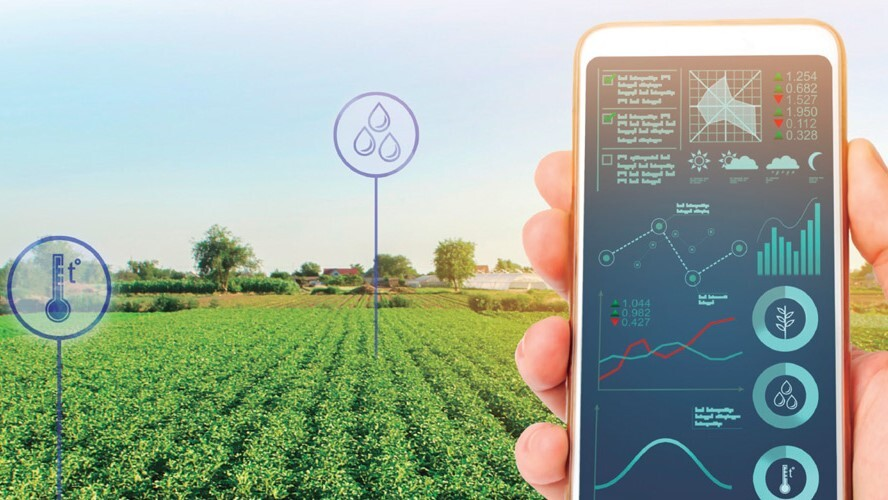
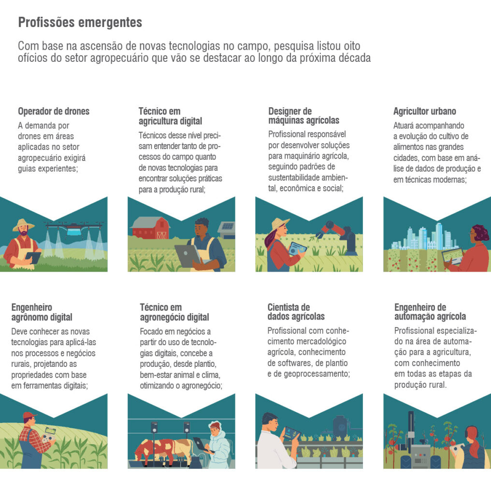

Do campo a cidade

tecnologia no campo
a tecnologia no campo e sua importância
, A tecnologia no campo consiste no uso de equipamentos e técnicas mais modernas na propriedade. Produtores rurais que não abrem espaço para tecnologias, máquinas modernas e sistemas automatizados dependem de informações sem fundamento.
Isso compromete completamente as atividades e a produtividade da lavoura. A modernidade te ajuda a fazer a gestão da fazenda e do campo, além do monitoramento da produção, do estoque, distribuição, comercialização e processamento.
Elas te ajudam a ter maior controle de qualidade das atividades diárias, tanto suas quanto dos seus funcionários.
A maior importância do uso da tecnologia no agronegócio está ligada ao fato de aumentar a eficiência do trabalho, o que te dá mais tempo para atuar no campo.
O uso de recursos desnecessários também é diminuído pela tecnologia, reduzindo também os riscos da atividade, aumentando a produtividade e a margem de lucro da fazenda.

Benefícios trazidos pela tecnologia no campo
A tecnologia do campo vem crescendo e trazendo cada vez mais benefícios para quem produz. Ainda assim, pode ser que dúvidas apareçam antes de implementá-la na sua lavoura.
Para te ajudar, veja algumas das grandes vantagens que a tecnologia no agro proporciona para o seu negócio.
5 vantagens da tecnologia no campo
1. Aumento da produtividade.
Um dos benefícios da tecnologia no campo é aumentar a produtividade. Em muitos casos é possível expandir a produção sem precisar de mais área,
apenas otimizando o espaço e recursos com o apoio da inteligência artificial.
2. Maior controle na gestão da propriedade.
A cadeia produtiva é complexa e quanto mais controle sobre os processos, maiores as chances de sucesso.
Com a tecnologia é possível uniformizar as tarefas, manter a integração dos processos e ter uma visão mais clara de toda a gestão.
3. Mais qualidade de alimento.
Como já vimos, um dos benefícios da tecnologia no campo é o aumento da qualidade dos alimentos.
Com mais tecnologia implementada na cadeia produtiva, fica mais fácil inspecionar a qualidade e garantir que todo o processo seja voltado à melhoria contínua.
4. Redução de custos e desperdícios.
Outro benefício está na economia. Com processos mais otimizados é possível ter uma produção mais eficiente e econômica. Além disso, há diversas tecnologias que podem ser controladas remotamente,
permitindo que o produtor acompanhe tudo sem estar presente fisicamente.
5. Implementação de processos mais sustentáveis.
Por fim, a tecnologia também está ao lado da sustentabilidade, pauta importantíssima para o agronegócio,
que apresenta grandes impactos ao meio ambiente. Nesse sentido, há soluções que buscam o melhor uso dos recursos naturais.
Biotecnologia no campo
A biotecnologia na agricultura permitiu o melhoramento genético convencional ou por meio de alterações pontuais e transgenia.
Isso tem gerado um avanço enorme no ganho de produtividade na agricultura mundial.